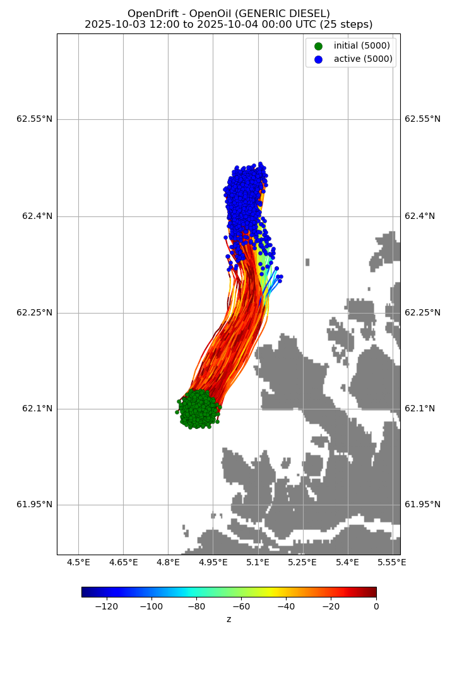

Note
Click here to download the full example code
Oil vertical mixing¶
from datetime import timedelta
from opendrift.readers import reader_netCDF_CF_generic
from opendrift.models.openoil import OpenOil
o = OpenOil(loglevel=20) # Set loglevel to 0 for debug information
ncfile = 'oilmixing.nc'
import_file = False # Set to True to import previous run
if import_file is True:
o.io_import_file(ncfile)
else:
reader_arome = reader_netCDF_CF_generic.Reader('https://thredds.met.no/thredds/dodsC/mepslatest/meps_lagged_6_h_latest_2_5km_latest.nc')
reader_norkyst = reader_netCDF_CF_generic.Reader('https://thredds.met.no/thredds/dodsC/sea/norkyst800m/1h/aggregate_be')
o.add_reader([reader_norkyst, reader_arome])
# Seed oil elements at defined position and time
o.seed_elements(lon=4.9, lat=62.1, z=0, radius=1000, number=2000,
time=reader_arome.start_time)
# Adjusting some configuration
#o.set_config('vertical_mixing:diffusivitymodel', 'windspeed_Sundby1983')
# Running model
o.run(end_time=reader_arome.start_time + timedelta(hours=12),
time_step=900, time_step_output=1800, outfile=ncfile)
Out:
22:28:34 INFO: OpenDriftSimulation initialised (version 1.3.0)
22:28:34 INFO: Opening dataset: https://thredds.met.no/thredds/dodsC/mepslatest/meps_lagged_6_h_latest_2_5km_latest.nc
22:28:34 INFO: Opening file with Dataset
22:28:35 INFO: Could not parse CF grid_mapping
22:28:37 INFO: Opening dataset: https://thredds.met.no/thredds/dodsC/sea/norkyst800m/1h/aggregate_be
22:28:37 INFO: Opening file with Dataset
22:28:44 INFO: Oil type not specified, using default: AASGAR
22:28:44 INFO: Config validation OK
22:28:44 INFO: Fallback values will be used for the following variables which have no readers:
22:28:44 INFO: sea_surface_wave_significant_height: 0.000000
22:28:44 INFO: sea_surface_wave_stokes_drift_x_velocity: 0.000000
22:28:44 INFO: sea_surface_wave_stokes_drift_y_velocity: 0.000000
22:28:44 INFO: sea_surface_wave_period_at_variance_spectral_density_maximum: 0.000000
22:28:44 INFO: sea_surface_wave_mean_period_from_variance_spectral_density_second_frequency_moment: 0.000000
22:28:44 INFO: sea_ice_area_fraction: 0.000000
22:28:44 INFO: sea_ice_x_velocity: 0.000000
22:28:44 INFO: sea_ice_y_velocity: 0.000000
22:28:44 INFO: Adding a dynamical landmask with max. priority based on assumed maximum speed of 1.3 m/s. Adding a customised landmask may be faster...
22:28:46 INFO: Using existing reader for land_binary_mask
22:28:46 INFO: All points are in ocean
22:28:46 INFO: Using default oil-water tension of 0.03Nm
22:28:47 INFO: 2020-06-30 19:00:00 - step 1 of 48 - 2000 active elements (0 deactivated)
22:28:51 INFO: 2020-06-30 19:15:00 - step 2 of 48 - 2000 active elements (0 deactivated)
22:28:52 INFO: Interpolating profiles in time
22:28:53 INFO: 2020-06-30 19:30:00 - step 3 of 48 - 1578 active elements (422 deactivated)
22:28:53 INFO: Interpolating profiles in time
22:28:53 INFO: 2020-06-30 19:45:00 - step 4 of 48 - 1509 active elements (491 deactivated)
22:28:53 INFO: Interpolating profiles in time
22:28:53 INFO: 2020-06-30 20:00:00 - step 5 of 48 - 1460 active elements (540 deactivated)
22:28:53 INFO: 2020-06-30 20:15:00 - step 6 of 48 - 1437 active elements (563 deactivated)
22:28:55 WARNING: Invalid values (-0.0056 to -0.0022) found for ocean_vertical_diffusivity, replacing with NaN
22:28:55 WARNING: (allowed range: [0, 1])
22:28:55 WARNING: Only NaNs input to linearNDFast - returning
22:28:55 INFO: Interpolating profiles in time
22:28:55 INFO: 2020-06-30 20:30:00 - step 7 of 48 - 1408 active elements (592 deactivated)
22:28:55 WARNING: Only NaNs input to linearNDFast - returning
22:28:55 INFO: Interpolating profiles in time
22:28:55 INFO: 2020-06-30 20:45:00 - step 8 of 48 - 1390 active elements (610 deactivated)
22:28:55 WARNING: Only NaNs input to linearNDFast - returning
22:28:55 INFO: Interpolating profiles in time
22:28:55 INFO: 2020-06-30 21:00:00 - step 9 of 48 - 1376 active elements (624 deactivated)
22:28:55 WARNING: Only NaNs input to linearNDFast - returning
22:28:55 INFO: 2020-06-30 21:15:00 - step 10 of 48 - 1364 active elements (636 deactivated)
22:28:57 WARNING: Invalid values (-0.014099999 to -0.006) found for ocean_vertical_diffusivity, replacing with NaN
22:28:57 WARNING: (allowed range: [0, 1])
22:28:57 WARNING: Only NaNs input to linearNDFast - returning
22:28:57 WARNING: Only NaNs input to linearNDFast - returning
22:28:57 INFO: Interpolating profiles in time
22:28:57 INFO: 2020-06-30 21:30:00 - step 11 of 48 - 1348 active elements (652 deactivated)
22:28:57 WARNING: Only NaNs input to linearNDFast - returning
22:28:57 WARNING: Only NaNs input to linearNDFast - returning
22:28:57 INFO: Interpolating profiles in time
22:28:57 INFO: 2020-06-30 21:45:00 - step 12 of 48 - 1340 active elements (660 deactivated)
22:28:57 WARNING: Only NaNs input to linearNDFast - returning
22:28:57 WARNING: Only NaNs input to linearNDFast - returning
22:28:57 INFO: Interpolating profiles in time
22:28:57 INFO: 2020-06-30 22:00:00 - step 13 of 48 - 1332 active elements (668 deactivated)
22:28:57 WARNING: Only NaNs input to linearNDFast - returning
22:28:58 INFO: 2020-06-30 22:15:00 - step 14 of 48 - 1326 active elements (674 deactivated)
22:28:59 WARNING: Invalid values (-0.0191 to -0.0112) found for ocean_vertical_diffusivity, replacing with NaN
22:28:59 WARNING: (allowed range: [0, 1])
22:28:59 WARNING: Only NaNs input to linearNDFast - returning
22:28:59 WARNING: Only NaNs input to linearNDFast - returning
22:28:59 INFO: Interpolating profiles in time
22:28:59 INFO: 2020-06-30 22:30:00 - step 15 of 48 - 1315 active elements (685 deactivated)
22:28:59 WARNING: Only NaNs input to linearNDFast - returning
22:28:59 WARNING: Only NaNs input to linearNDFast - returning
22:28:59 INFO: Interpolating profiles in time
22:29:00 INFO: 2020-06-30 22:45:00 - step 16 of 48 - 1310 active elements (690 deactivated)
22:29:00 WARNING: Only NaNs input to linearNDFast - returning
22:29:00 WARNING: Only NaNs input to linearNDFast - returning
22:29:00 INFO: Interpolating profiles in time
22:29:00 INFO: 2020-06-30 23:00:00 - step 17 of 48 - 1304 active elements (696 deactivated)
22:29:00 WARNING: Only NaNs input to linearNDFast - returning
22:29:00 INFO: 2020-06-30 23:15:00 - step 18 of 48 - 1294 active elements (706 deactivated)
22:29:02 WARNING: Invalid values (-0.019 to -0.015299999) found for ocean_vertical_diffusivity, replacing with NaN
22:29:02 WARNING: (allowed range: [0, 1])
22:29:02 WARNING: Only NaNs input to linearNDFast - returning
22:29:02 WARNING: Only NaNs input to linearNDFast - returning
22:29:02 INFO: Interpolating profiles in time
22:29:02 INFO: 2020-06-30 23:30:00 - step 19 of 48 - 1285 active elements (715 deactivated)
22:29:02 WARNING: Only NaNs input to linearNDFast - returning
22:29:02 WARNING: Only NaNs input to linearNDFast - returning
22:29:02 INFO: Interpolating profiles in time
22:29:02 INFO: 2020-06-30 23:45:00 - step 20 of 48 - 1272 active elements (728 deactivated)
22:29:02 WARNING: Only NaNs input to linearNDFast - returning
22:29:02 WARNING: Only NaNs input to linearNDFast - returning
22:29:02 INFO: Interpolating profiles in time
22:29:03 INFO: 2020-07-01 00:00:00 - step 21 of 48 - 1268 active elements (732 deactivated)
22:29:03 WARNING: Only NaNs input to linearNDFast - returning
22:29:03 INFO: 2020-07-01 00:15:00 - step 22 of 48 - 1265 active elements (735 deactivated)
22:29:04 WARNING: Invalid values (-0.0189 to -0.0150999995) found for ocean_vertical_diffusivity, replacing with NaN
22:29:04 WARNING: (allowed range: [0, 1])
22:29:04 WARNING: Only NaNs input to linearNDFast - returning
22:29:04 WARNING: Only NaNs input to linearNDFast - returning
22:29:04 INFO: Interpolating profiles in time
22:29:04 INFO: 2020-07-01 00:30:00 - step 23 of 48 - 1264 active elements (736 deactivated)
22:29:04 WARNING: Only NaNs input to linearNDFast - returning
22:29:04 WARNING: Only NaNs input to linearNDFast - returning
22:29:04 INFO: Interpolating profiles in time
22:29:04 INFO: 2020-07-01 00:45:00 - step 24 of 48 - 1260 active elements (740 deactivated)
22:29:04 WARNING: Only NaNs input to linearNDFast - returning
22:29:04 WARNING: Only NaNs input to linearNDFast - returning
22:29:04 INFO: Interpolating profiles in time
22:29:04 INFO: 2020-07-01 01:00:00 - step 25 of 48 - 1258 active elements (742 deactivated)
22:29:04 WARNING: Only NaNs input to linearNDFast - returning
22:29:04 INFO: 2020-07-01 01:15:00 - step 26 of 48 - 1252 active elements (748 deactivated)
22:29:05 WARNING: Invalid values (-0.0131 to -0.0105) found for ocean_vertical_diffusivity, replacing with NaN
22:29:05 WARNING: (allowed range: [0, 1])
22:29:05 WARNING: Only NaNs input to linearNDFast - returning
22:29:05 WARNING: Only NaNs input to linearNDFast - returning
22:29:05 INFO: Interpolating profiles in time
22:29:06 INFO: 2020-07-01 01:30:00 - step 27 of 48 - 1249 active elements (751 deactivated)
22:29:06 WARNING: Only NaNs input to linearNDFast - returning
22:29:06 WARNING: Only NaNs input to linearNDFast - returning
22:29:06 INFO: Interpolating profiles in time
22:29:06 INFO: 2020-07-01 01:45:00 - step 28 of 48 - 1244 active elements (756 deactivated)
22:29:06 WARNING: Only NaNs input to linearNDFast - returning
22:29:06 WARNING: Only NaNs input to linearNDFast - returning
22:29:06 INFO: Interpolating profiles in time
22:29:06 INFO: 2020-07-01 02:00:00 - step 29 of 48 - 1240 active elements (760 deactivated)
22:29:06 WARNING: Only NaNs input to linearNDFast - returning
22:29:06 INFO: 2020-07-01 02:15:00 - step 30 of 48 - 1237 active elements (763 deactivated)
22:29:07 WARNING: Invalid values (-0.0047999998 to -0.0039) found for ocean_vertical_diffusivity, replacing with NaN
22:29:07 WARNING: (allowed range: [0, 1])
22:29:07 WARNING: Only NaNs input to linearNDFast - returning
22:29:07 WARNING: Only NaNs input to linearNDFast - returning
22:29:07 INFO: Interpolating profiles in time
22:29:07 INFO: 2020-07-01 02:30:00 - step 31 of 48 - 1233 active elements (767 deactivated)
22:29:07 WARNING: Only NaNs input to linearNDFast - returning
22:29:07 WARNING: Only NaNs input to linearNDFast - returning
22:29:07 INFO: Interpolating profiles in time
22:29:08 INFO: 2020-07-01 02:45:00 - step 32 of 48 - 1229 active elements (771 deactivated)
22:29:08 WARNING: Only NaNs input to linearNDFast - returning
22:29:08 WARNING: Only NaNs input to linearNDFast - returning
22:29:08 INFO: Interpolating profiles in time
22:29:08 INFO: 2020-07-01 03:00:00 - step 33 of 48 - 1227 active elements (773 deactivated)
22:29:08 WARNING: Only NaNs input to linearNDFast - returning
22:29:08 INFO: 2020-07-01 03:15:00 - step 34 of 48 - 1226 active elements (774 deactivated)
22:29:09 WARNING: Only NaNs input to linearNDFast - returning
22:29:09 INFO: Interpolating profiles in time
22:29:09 INFO: 2020-07-01 03:30:00 - step 35 of 48 - 1221 active elements (779 deactivated)
22:29:09 WARNING: Only NaNs input to linearNDFast - returning
22:29:09 INFO: Interpolating profiles in time
22:29:09 INFO: 2020-07-01 03:45:00 - step 36 of 48 - 1220 active elements (780 deactivated)
22:29:09 WARNING: Only NaNs input to linearNDFast - returning
22:29:09 INFO: Interpolating profiles in time
22:29:09 INFO: 2020-07-01 04:00:00 - step 37 of 48 - 1216 active elements (784 deactivated)
22:29:09 INFO: 2020-07-01 04:15:00 - step 38 of 48 - 1213 active elements (787 deactivated)
22:29:11 INFO: Interpolating profiles in time
22:29:11 INFO: 2020-07-01 04:30:00 - step 39 of 48 - 1213 active elements (787 deactivated)
22:29:11 INFO: Interpolating profiles in time
22:29:11 INFO: 2020-07-01 04:45:00 - step 40 of 48 - 1211 active elements (789 deactivated)
22:29:11 INFO: Interpolating profiles in time
22:29:11 INFO: 2020-07-01 05:00:00 - step 41 of 48 - 1209 active elements (791 deactivated)
22:29:11 INFO: 2020-07-01 05:15:00 - step 42 of 48 - 1209 active elements (791 deactivated)
22:29:12 INFO: Interpolating profiles in time
22:29:13 INFO: 2020-07-01 05:30:00 - step 43 of 48 - 1207 active elements (793 deactivated)
22:29:13 INFO: Interpolating profiles in time
22:29:13 INFO: 2020-07-01 05:45:00 - step 44 of 48 - 1206 active elements (794 deactivated)
22:29:13 INFO: Interpolating profiles in time
22:29:13 INFO: 2020-07-01 06:00:00 - step 45 of 48 - 1204 active elements (796 deactivated)
22:29:13 INFO: 2020-07-01 06:15:00 - step 46 of 48 - 1203 active elements (797 deactivated)
22:29:14 INFO: Interpolating profiles in time
22:29:14 INFO: 2020-07-01 06:30:00 - step 47 of 48 - 1199 active elements (801 deactivated)
22:29:14 INFO: Interpolating profiles in time
22:29:15 INFO: 2020-07-01 06:45:00 - step 48 of 48 - 1198 active elements (802 deactivated)
22:29:15 INFO: Interpolating profiles in time
22:29:15 INFO: Wrote 25 steps to file oilmixing.nc
Print and plot results
print(o)
o.plot(linecolor='z', fast=True)
o.plot_property('z')
o.plot_oil_budget()
o.animation(fast=True)
- 


Out:
===========================
--------------------
Reader performance:
--------------------
https://thredds.met.no/thredds/dodsC/sea/norkyst800m/1h/aggregate_be
0:00:23.5 total
0:00:00.0 preparing
0:00:22.7 reading
0:00:00.6 interpolation
0:00:00.0 interpolation_time
0:00:00.0 masking
--------------------
https://thredds.met.no/thredds/dodsC/mepslatest/meps_lagged_6_h_latest_2_5km_latest.nc
--------------------
global_landmask
0:00:00.0 total
0:00:00.0 preparing
0:00:00.0 reading
0:00:00.0 interpolation_time
0:00:00.0 masking
--------------------
Performance:
41.4 total time
10.0 configuration
2.6 preparing main loop
2.4 making dynamical landmask
0.0 moving elements to ocean
23.9 readers
0.0 global_landmask
0.1 postprocessing
28.1 main loop
23.6 https://thredds.met.no/thredds/dodsC/sea/norkyst800m/1h/aggregate_be
3.9 updating elements
0.0 oil weathering
3.4 vertical mixing
0.5 cleaning up
--------------------
===========================
Model: OpenOil (OpenDrift version 1.3.0)
1194 active Oil particles (806 deactivated, 0 scheduled)
Projection: +proj=stere +ellps=WGS84 +lat_0=90.0 +lat_ts=60.0 +x_0=3192800 +y_0=1784000 +lon_0=70
-------------------
Environment variables:
-----
ocean_vertical_diffusivity
sea_floor_depth_below_sea_level
sea_water_salinity
sea_water_temperature
upward_sea_water_velocity
x_sea_water_velocity
y_sea_water_velocity
1) https://thredds.met.no/thredds/dodsC/sea/norkyst800m/1h/aggregate_be
-----
x_wind
y_wind
1) https://thredds.met.no/thredds/dodsC/sea/norkyst800m/1h/aggregate_be
2) https://thredds.met.no/thredds/dodsC/mepslatest/meps_lagged_6_h_latest_2_5km_latest.nc
-----
land_binary_mask
1) global_landmask
-----
Readers not added for the following variables:
sea_ice_area_fraction
sea_ice_x_velocity
sea_ice_y_velocity
sea_surface_wave_mean_period_from_variance_spectral_density_second_frequency_moment
sea_surface_wave_period_at_variance_spectral_density_maximum
sea_surface_wave_significant_height
sea_surface_wave_stokes_drift_x_velocity
sea_surface_wave_stokes_drift_y_velocity
Time:
Start: 2020-06-30 19:00:00
Present: 2020-07-01 07:00:00
Calculation steps: 48 * 0:15:00 - total time: 12:00:00
Output steps: 25 * 0:30:00
===========================
22:29:15 WARNING: plotting fast. this will make your plots less accurate.
/opt/conda/envs/opendrift/lib/python3.8/site-packages/numpy/ma/core.py:1026: RuntimeWarning: overflow encountered in multiply
result = self.f(da, db, *args, **kwargs)
22:29:29 WARNING: plotting fast. this will make your plots less accurate.
22:29:30 INFO: Saving animation to /root/project/docs/source/gallery/animations/example_oil_verticalmixing_0.gif...
22:29:30 INFO: Making animated gif...

Total running time of the script: ( 1 minutes 14.039 seconds)